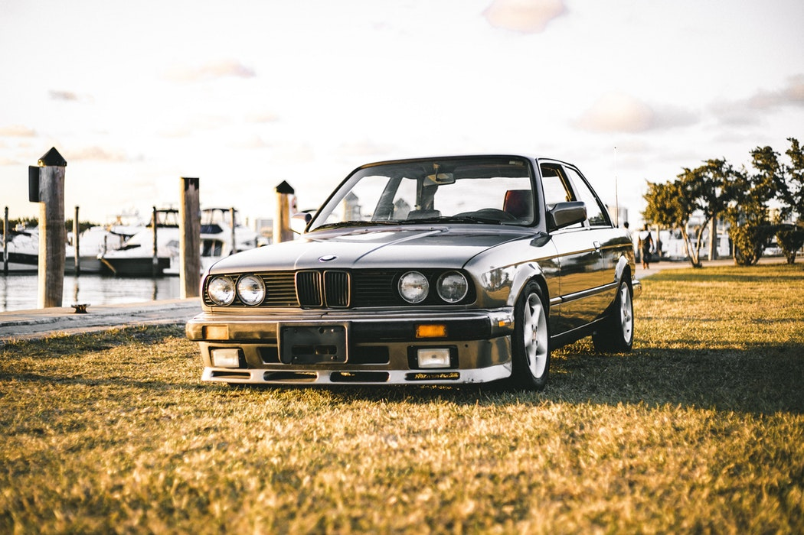
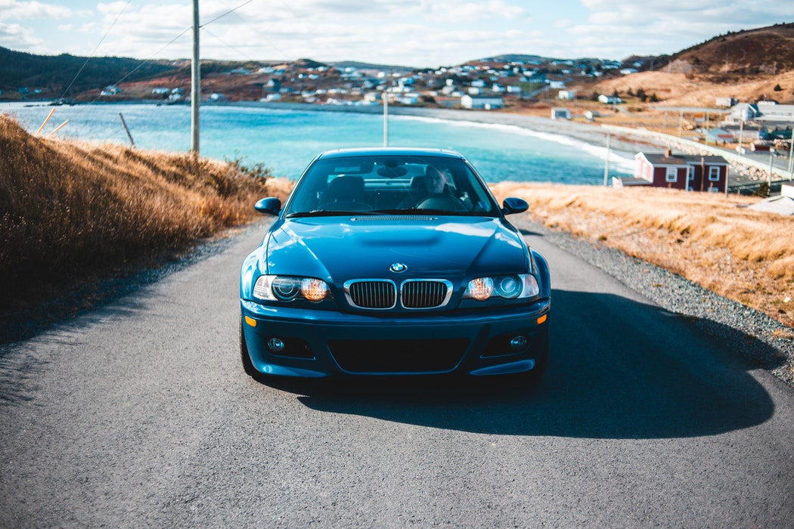
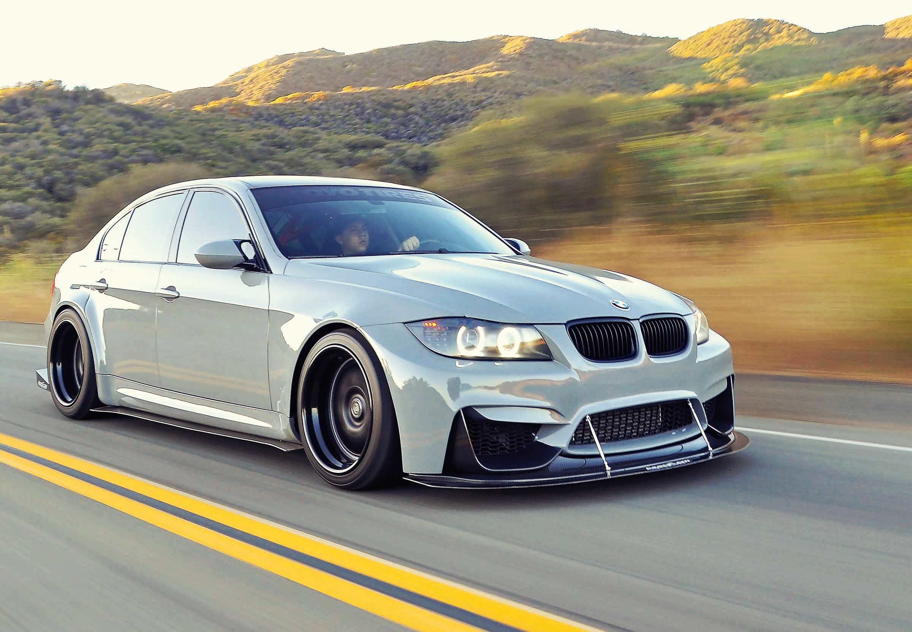
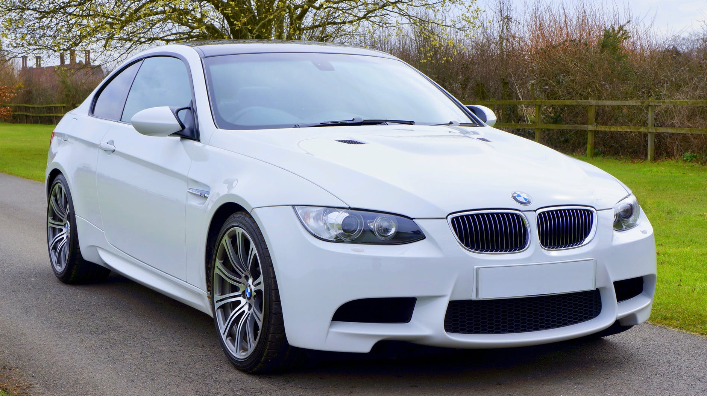
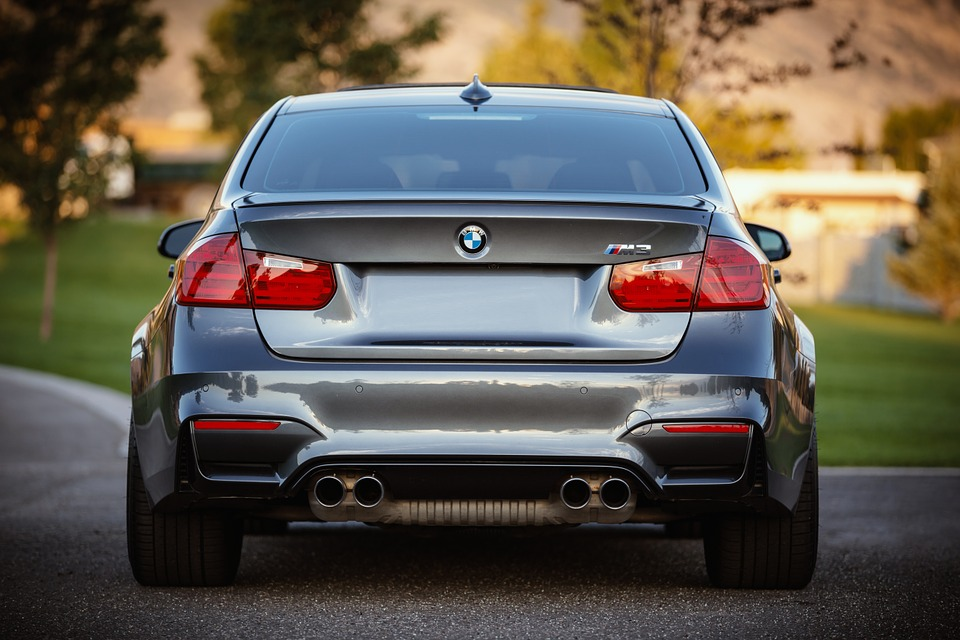
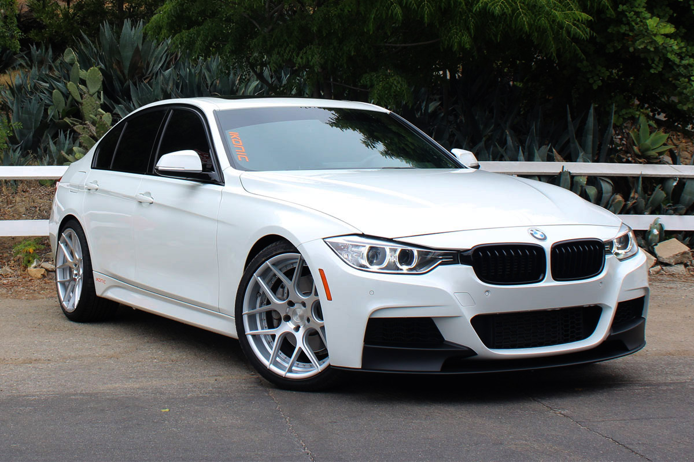

Select Your Model
E30

The BMW E30 is an entry-level luxury car which was produced by BMW from 1982 to
1994.
Power: 150 @6000 rpm
Torque: 151 @5000 rpm
Power: 150 @6000 rpm
Torque: 151 @5000 rpm
E46

In 1993, the development programme for the E46 began under chief engineer Wolfgang
Ziebart and head of R&D Wolfgang Reitzle.
Power: 333 @7900 rpm
Torque: 262 @4900 rpm
Power: 333 @7900 rpm
Torque: 262 @4900 rpm
330ci
IThe body shell of the E46 was claimed by BMW to be 70% more rigid than its E36
predecessor. Aluminium was used for an increased quantity of suspension
components, in order to decrease unsprung mass.
Power: 235 @6000 rpm
Torque: 222 @4500 rpm
Power: 235 @6000 rpm
Torque: 222 @4500 rpm
E90

The sedan model was the first model sold of the 5th generation BMW 3 series, being
launched on March 5, 2005
Power: 300 @5800 rpm
Torque: 300 @2500 rpm
Power: 300 @5800 rpm
Torque: 300 @2500 rpm
E92
The coupe body style of the fifth generation 3 Series became available in August
2006 as a 2007 model year, one year after the saloon.
Power: 300 @5800 rpm
Torque: 300 @2500 rpm
Power: 300 @5800 rpm
Torque: 300 @2500 rpm
E90 M3

The E90 generation M3 isn’t a bad car, but it marks the biggest departure from the
original lightweight racer M3. In ’07, the E90 was the heaviest and most luxurious
M3 yet.
Power: 414 @8300 rpm
Torque: 295 @3900 rpm
Power: 414 @8300 rpm
Torque: 295 @3900 rpm
F82 M4
With a 0-100 km/h time of 4.1 seconds, Nurburgring-honed ride and handling, and a
reputation that spans more than 30 years, the BMW M4 has much to offer the
enthusiast driver.
Power: 425 @5500 rpm
Torque: 406 @1850 rpm
Power: 425 @5500 rpm
Torque: 406 @1850 rpm
F80 M3

BMW Motorsport took a look at some of the disappointing aspects of the E90/E92 and
went about fixing them. Gone is the big V8 with the disappointing torque numbers,
and in its place the sweet BMW inline 6-cylinder engine
Power: 425 @5500 rpm
Torque: 406 @1850 rpm
Power: 425 @5500 rpm
Torque: 406 @1850 rpm
F30

The F30/F31 has grown in all dimensions compared to its predecessor. The
styling is similar to previous generations with a sweeping bonnet, short front
overhang. Headlamps now connect to a wide kidney grill.
Power: 322 @5500 rpm
Torque: 332 @1380 rpm
Power: 322 @5500 rpm
Torque: 332 @1380 rpm